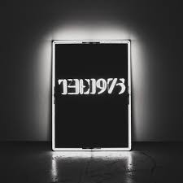

Top 1
16b
16b is all about the guys that falling in love with girl but is too much dangerous and toxic and 16b is the place where all that happens. the song is based on a reality.
Top 2
Robbers
This song is about two lovers who aren't good for each other. She's having second thoughts but they keep putting off the inevitable end of the relationship. In doing so they are robbing each other of happiness.
Top 3

All Too Well
the 10-minute version of "All Too Well" has been a fandom in joke/meme we're actually kinda serious about wanting to hear it tho ever since.
Top 4

Praise The Lord
A$AP Rocky has been a avid drug user since his teenage years when he sold weed and crack in the Bronx. The rapper's open attitude towards his usage of pharmaceuticals feeds into his music as well, once even recording a track titled "LSD." Rocky laid down this cut with UK grime artist Skepta in London while the pair were high on mushrooms and LSD.
Top 5
All Of Us Are Dead
“LOVE.” finds Kendrick Lamar musing on the woman in his life; presumably his fiancé Whitney Alford, whom he has been in a relationship with since his high school days. Kendrick uses this ballad to ask the essential questions to his partner to solidify the most important aspect of their relationship: love. Kendrick has kept his relationship with Alford under wraps for a majority of his career. It wasn’t until 2016 that word got out that he was engaged.
Top 6
Summer
the song is all about "LIFE".
Top 7
Paris
The Chainsmokers expanded on the background to the song during a Facebook post: "Drew had a friend from the East coast who had been struggling with a drug addiction for the past few years. He was a childhood friend and their families were close, so his parents kept him informed on how he was doing. He and Drew would keep in touch on Facebook chat but would never speak about what he was going through, but meanwhile Drew knew of all the craziness that surrounded his friend's life.
Top 8

This Feeling
This is a story of how two people, who are wrong for each other, force themselves into a relationship. Their friends can see that these two are not meant for each other, but the couple fails to fight their instant gut feelings. The girl says they have certain expectations of their relationship. At a glance, it seems as if the partner is able to cater to all these requirements. But that’s what ‘the thing in their chest’ says. Not that ‘the thing in your chest’ is always wrong. But you have to give reigns to the head when jumping into a relationship.
Top 9

Zombie
The song was written in response to the death of Johnathan Ball, 3, and Tim Parry, 12, who had been killed in the IRA bombing in Warrington, northwest England, when two devices hidden in litter bins were detonated.
Top 10

Something New
the is all about she want to try something new and no one can stop her.